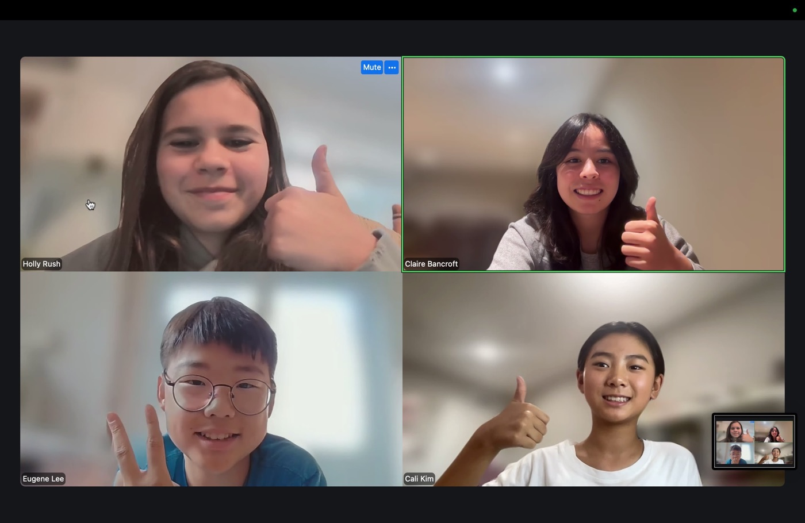
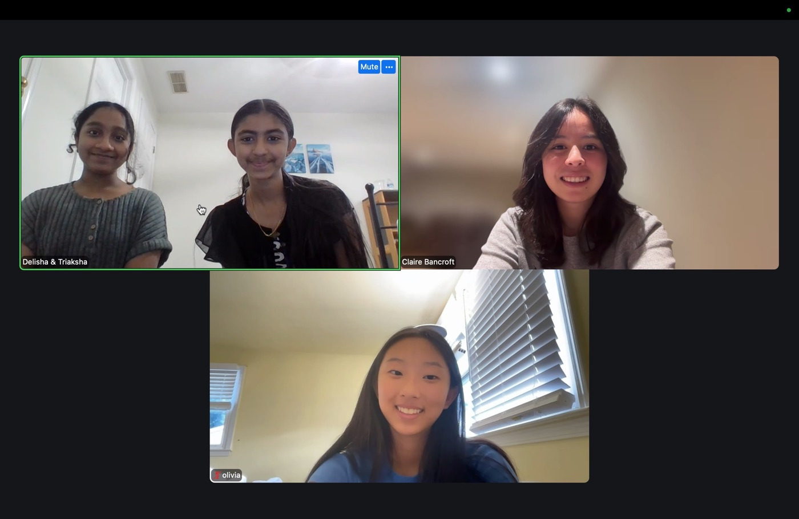
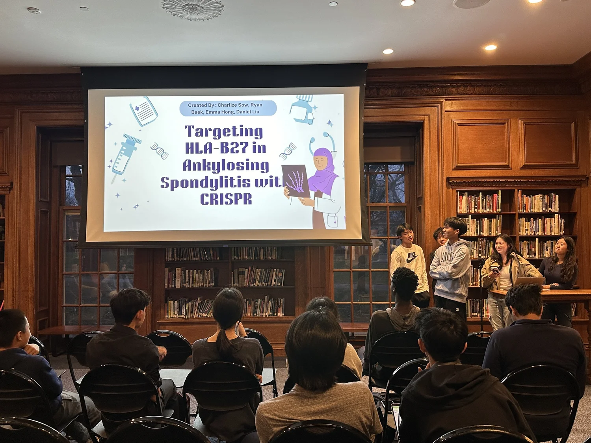
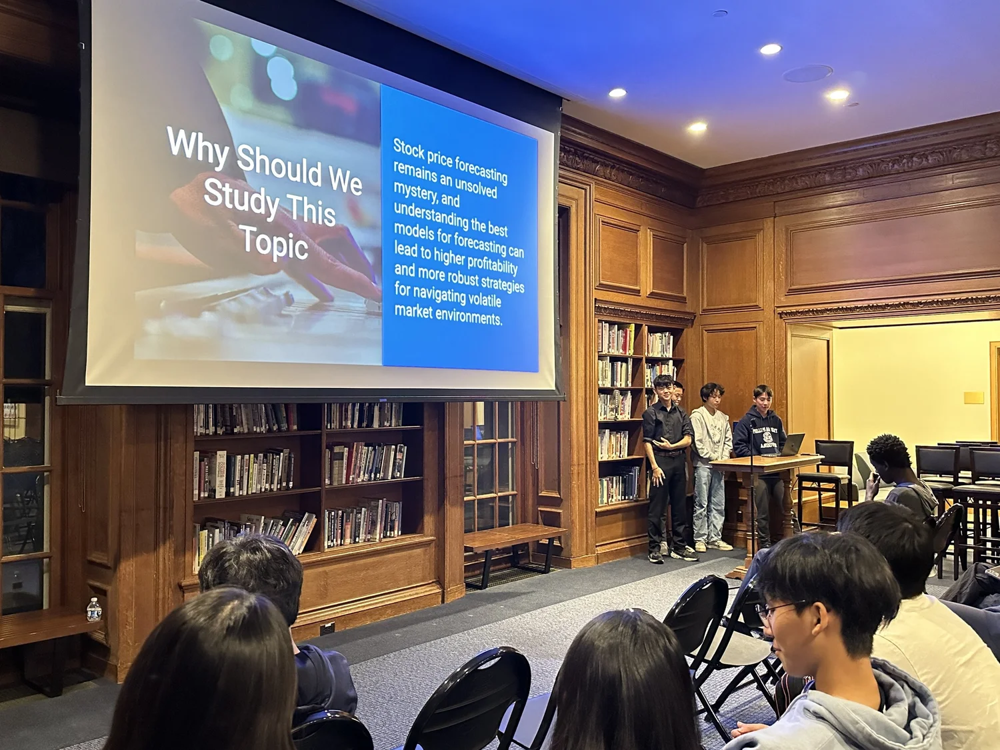
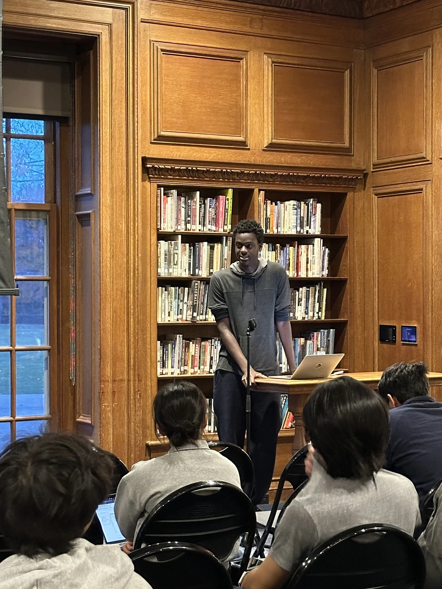

A guided path through a complete research project, taught by experienced researchers. You'll brainstorm, read real papers, design your methods, write, revise, and present your work, with a mentor beside you the whole way.


Eleven guided sessions walk you through the full arc of real research: finding a question you care about, reading and analyzing the literature, designing a methodology you can actually pull off, then writing, revising, and presenting a finished paper.
Every session pairs teaching with hands-on work: worksheets for methods and outlines, peer feedback in small working groups, and take-home steps that keep your project moving between meetings.
Explore the full curriculum →Some questions don't have answers you can look up. Your mentor helps you chase yours somewhere real.

the questions you can't stop asking

projects people can see, share, and use
Papers, posters, presentations, science-fair projects: the outcome follows your vision.
Our most ambitious students don't just study knowledge. They add to it.

research that pushes boundaries and leaves a mark
Find a question you actually care about. Brainstorm widely, score your ideas honestly, and learn how real research papers are built by reading them.
Sessions 1–4
Turn your question into a plan. Design a methodology that's actually doable, outline your paper, and pressure-test it in small working groups.
Sessions 5–7
Write, revise, and share. Draft your abstract, polish the paper with peer and mentor feedback, and present at the final symposium.
Sessions 8–11
Click any session to see what happens and what you'll take home.
{{ s.desc }}
{{ s.hw }}
Your very first homework. Think of a research idea and score it 1–5 on each category — the honest total tells you if it's a keeper.
1 = nope, not really · 5 = def yes!!
Every project starts from what you already love. Pick the track that matches it.
Train and evaluate models, analyze datasets, and explore how AI can answer questions in any field you care about.
Build literature reviews and analytical papers in history, philosophy, policy, literature, and culture.
Design experimental and observational studies in biology, physics, math, engineering, and beyond.
Manipulate a variable or environment to test cause and effect — like testing how a condition changes growth or a physical reaction.
Gather, track, and analyze existing data or materials without interfering — public datasets, surveys, records.
For the humanities pathway: evaluate and synthesize many academic sources around a single theme.
Analyze specific texts or artifacts to defend a thesis — rhetoric, history, philosophy, and more.
Experienced student mentors check your progress, give feedback on drafts, and keep your project on track with clear milestones.
Hear from researchers and college students about how real research gets done — and where it can take you.
Dedicated work meetings in small groups, where you peer-edit, swap ideas, and push each other's papers forward.
Most programs give every student the same path. {{ brand }} builds yours from scratch.
| Other programs | {{ brand }} | |
|---|---|---|
| Project direction | Assigned or preselected topics | You choose your own research question |
| Outcome | Another school project | Real research and novel ideas |
| Scheduling | Fixed times and dates | Flexible, with sessions that work for international students |
| Mentorship | Group or occasional check-ins | 1-on-1 with an experienced high school researcher |
| Student ownership | A fill-in-the-blanks template | You drive every decision, with guidance |
Our mentors are high schoolers, and that matters: nobody can speak to students better than other students. Every mentor has experience tutoring and mentoring, and all of them volunteer because they love sharing research.
The program is free, online, and open to curious students ages 14–20. The application takes about 45 minutes — rough answers and bullet points are encouraged.
No wrong answers — we want to see how you think.